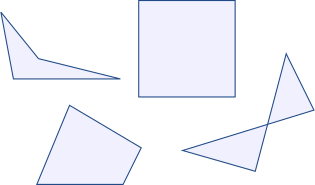
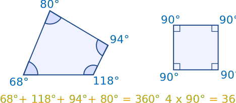
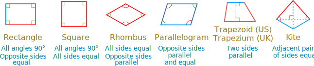
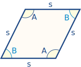
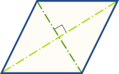
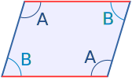
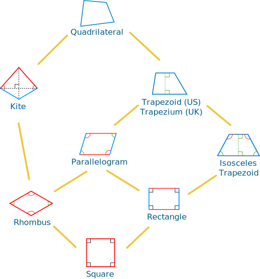
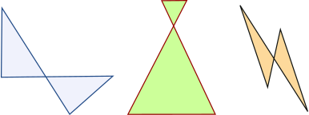

Quadrilaterals

Quadrilateral just means "four sides"
(quad means four, lateral means side).
A Quadrilateral has four-sides, it is 2-dimensional (a flat shape), closed (the lines join up), and has straight sides.
Try it Yourself
(Also see this on Interactive Quadrilaterals)
Properties
A quadrilateral has:
- four sides (edges)
- four vertices (corners)
- interior angles that add to 360 degrees:

Try drawing a quadrilateral, and measure the angles. They should add to 360°
Types of Quadrilaterals
There are special types of quadrilateral:

Some types are also included in the definition of other types! For example a square, rhombus and rectangle are also parallelograms. See below for more details.
Let us look at each type in turn:
The Rectangle

the little squares in each corner mean "right angle"
A rectangle is a four-sided shape where every angle is a right angle (90°).
Also opposite sides are parallel and of equal length.
The Square

the little squares in each corner mean "right angle"
A square has equal sides (marked "s") and every angle is a right angle (90°)
Also opposite sides are parallel.
A square also fits the definition of a rectangle (all angles are 90°), and a rhombus (all sides are equal length).
The Rhombus

A rhombus is a four-sided shape where all sides have equal length (marked "s").
Also opposite sides are parallel and opposite angles are equal.

Another interesting thing is that the diagonals (dashed lines) meet in the middle at a right angle. In other words they "bisect" (cut in half) each other at right angles.
A rhombus is sometimes called a rhomb or a diamond.
The Parallelogram

A parallelogram has opposite sides parallel and equal in length. Also opposite angles are equal (angles "A" are the same, and angles "B" are the same).
NOTE: Squares, Rectangles and Rhombuses are all Parallelograms!
Example:
A parallelogram with:
- all sides equal and
- angles "A" and "B" as right angles
is a square!
The Trapezoid (UK: Trapezium)
 |
 |
|
|
Trapezoid |
Isosceles Trapezoid |
A trapezoid (called a trapezium in the UK) has a pair of opposite sides parallel.
And a trapezium (called a trapezoid in the UK) is a quadrilateral with NO parallel sides:
| Trapezoid | Trapezium | |
| In the US: | a pair of parallel sides | NO parallel sides |
| In the UK: | NO parallel sides | a pair of parallel sides |
| (the US and UK definitions are swapped over!) | ||
An Isosceles trapezoid, as shown above, has left and right sides of equal length that join to the base at equal angles.
The Kite

Hey, it looks like a kite (usually).
It has two pairs of sides:
Each pair is made of two equal-length sides that join up.
Also:
- the angles where the two pairs meet are equal.
- the diagonals, shown as dashed lines above, meet at a right angle.
- one of the diagonals bisects (cuts equally in half) the other.
... and that's it for the special quadrilaterals.
Irregular Quadrilaterals
The only regular (all sides equal and all angles equal) quadrilateral is a square. So all other quadrilaterals are irregular.
The "Family Tree" Chart
Quadrilateral definitions are inclusive.
Example: a square is also a rectangle.
So we include a square in the definition of a rectangle.
(We don't say "Having all 90° angles makes it a rectangle except when all sides are equal then it is a square.")
This may seem odd, as in daily life we think of a square as not being a rectangle ... but in mathematics it is.
Using the chart below we can answer such questions as:
- Is a Square a type of Rectangle? (Yes)
- Is a Rectangle a type of Kite? (No)

Complex Quadrilaterals
Oh Yes! when two sides cross over, we call it a "Complex" or "Self-Intersecting" quadrilateral, like these:

They still have 4 sides, but two sides cross over.
Polygon
A quadrilateral is a polygon. In fact it is a 4-sided polygon, just like a triangle is a 3-sided polygon, a pentagon is a 5-sided polygon, and so on.
Play with Them
Now that you know the different types, you can play with the Interactive Quadrilaterals.
Other Names
A quadrilateral can sometimes be called:
- a Quadrangle ("four angles"), so it sounds like "triangle"
- a Tetragon ("four polygon"), so it sounds like "pentagon", "hexagon", etc.